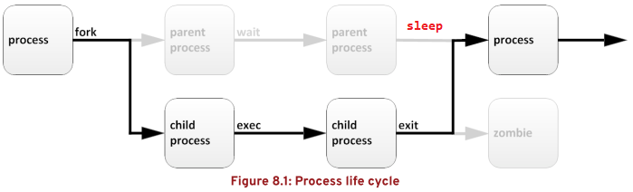

第八章 监控和管理Linux进程
目标：
- 评估和控制运行在红帽企业Linux系统上的进程。
章节：
- 列出进程
- 控制作业
- 中断进程
- 监控进程活动
第一节：列出进程
目标：
- 完成本节后，学生应该能获取有关在系统上运行的程序的信息，以便确定状态、资源使用情况和
所有权，从而对它们进行控制。
进程的定义：
- 进程（process）是已启动的可执行程序的运行中实例，由以下部分组成：
1. 已分配的内存地址空间
2. 安全属性，包括所有权凭据与特权。
3. 程序代码中一个或多个的执行线程（thread）
4. 进程状态
- 进程的环境包括：
1. 本地与全局变量
2. 当前调度上下文（context）
3. 已分配的系统资源，如文件描述符与网络端口。
- 现有的父进程复制自己的内存地址空间（fork）来创建一个新的子进程结构。
- 每个新进程分配有一个唯一进程ID（PID），满足跟踪和安全性。
- PID和父进程ID（PPID）是新进程环境的元素。
- 任何进程可创建子进程，所有进程都是第一个系统进程创建的。
- 在RHEL 8/7上，第一个系统进程是systemd。
- 通过fork进程，子进程继承安全性⾝份、过去和当前的文件描述符、端口和资源特权、
环境变量，以及程序代码。
- 随后，子进程可能执行（exec）其自己的程序代码。
- 通常，父进程在子进程运行期间处于睡眠状态（sleep），设置在子进程完成时发出信号的请求（wait）。
- 在退出时，子进程已经关闭或丢弃了其资源和环境。
- 唯一剩下的资源称为僵停（zombie），是进程表中的一个条目（entry）。
- 父进程在子进程退出时收到信号被唤醒（wake），清理进程表的zombie条目，释放子进程的最后一个资源。
- 然后，父进程继续执行自己的程序代码。
- 进程生命周期，如下所示：

描述进程状态：
- 多任务操作系统中，每个CPU（或CPU核心）同一时间片处理一个进程，
进程运行时具有不同状态。

- Linux进程状态说明：
1. R（Running or Runnable，运行）：
正在运行或在运行队列中等待。
2. S（Sleeping，睡眠）：
可中断睡眠，浅度睡眠，可被唤醒，在等待某个条件的形成或接收到（子进程）信号。
3. D（Uninterruptible Sleeping/Disk Sleeping，不可中断睡眠）：
不可中断睡眠，深度睡眠，收到信号不唤醒和不可运行，通常在磁盘写入时发生。
4. Z（Zombie，僵死）：
子进程终止退出，父进程仍在运行，但父进程未等待子进程的退出状态，即父进程不调用wait()
或waitpid()系统调用，子进程进入僵死状态。
5. X（Dead，死亡）：
父进程清理子进程的剩余状态，彻底释放子进程资源，该状态在进程列表中不出现。
6. T（Traced or Stopped，停止）：
进程收到SIGSTOP、SIGTSTP、SIGTTOU等信号后停止运行。


* 注意：
1. Linux进程状态后缀表示：
a. <：优先级高的进程
b. N：优先级低的进程
c. L：有些页被锁进内存
d. s：具有子进程的父进程
e. l：具有多线程的进程
f. +：位于后台的进程组
2. $ man ps：查看ps帮助文档

3. 若子进程的父进程先结束，那么该进程就不会变成僵尸进程。
因为每个进程结束时，系统都会扫描当前系统中所运行的所有进程，查看是否有哪个进程是刚结束的
这个进程的子进程，如果存在子进程，就由1号进程（init或systemd进程）接管，成为其父进程，
从而保证每个进程都会有一个父进程，该子进程称为“孤儿进程”。
4. init或systemd会自动wait其子进程，因此被init或systemd接管的所有进程都不会变成僵尸进程。
5. 产生僵尸进程的原因：程序代码逻辑问题、对程序的非常规操作等。
6. 处理僵尸进程：
a. 僵尸进程在进程表中常表现为"<defunct>"状态
b. 杀死该僵尸进程的父进程可将其清除，若依然无效可重启操作系统。
列出进程：
- ps命令用于列出当前会话进程，包括：
1. 运行进程的用户UID
2. 进程PID
3. 进程使用的CPU百分比
4. 进程的物理内存使用百分比（不包含Swap空间）
5. 进程的STDOUT位置，称为控制终端。
6. 当前进程状态
- 其中ps -aux（UNIX POSIX格式）不同于 ps aux（BSD格式）
- $ ps aux：查看系统上运行的所有进程，-a选项为显示当前终端的进程，-u选项显示运行进程的用户。
$ ps aux --sort [+|-]%cpu：正序或反序排列CPU使用百分比
$ ps aux --sort [+|-]%mem：正序或反序排列物理内存使用百分比
$ ps aux --sort [+|-]rss：正序或反序排列实际使用的物理内存
$ ps auxm：查看系统上运行的所有进程，并在每个进程下显示该进程的所有线程。
$ ps lax：长列表格式输出系统上运行的所有进程
$ ps -ef：全格式输出系统上运行的所有进程
$ ps -efL：全格式输出系统上运行的所有进程，并显示给个进程的线程数（NLWP）。
$ ps -L -C <process_name>：查看指定进程的线程信息
$ ps -L [-p|p|-q|q] <pid>：查看指定进程的线程信息


- 方括号中的进程（通常位于列表顶部）为调度的内核线程。
- 僵停列为 exiting 或 <defunct>。
- ps命令的输出显示一次。
- 使用top命令来获得动态更新的进程显示。
- pstree命令可以采用树形显示格式，以便查看父进程和子进程之间的关系。
练习 P245：LISTING PROCESSES
第二节：控制作业
目标：
- 完成本节后，学生应该能使用Bash作业控制来管理从同一终端会话启动的多个进程。
描述作业与会话：Job and Session
- 作业控制（job control）是shell的一种功能，允许单个shell实例运行和管理多个命令。
- 一个终端同一时间只能对一个作业发送信号和读取信息，这个作业进程称为前台进程（background process）。
- 可以将作业进程放入后台（background），可以运行也可以暂停。
- 每个终端就是一个会话（session），里面可能含有一个前台进程和任意数量的后台进程。
- 一个作业只能属于一个会话。
- ps命令输出中有些进程由系统启动，不是由shell提示符启动，这种进程没有终端（TTY），
无法切换到前台，在ps命令中的TTY列显示为"?"。
在后台运行作业：
- 在命令后加 & 即可在后台启动作业，返回job ID与子进程PID，shell继续显示提示符。

* 注意：
1. 如果利用 & 符号（ampersand）将包含管道的命令行发送至后台，管道中最后一个命令的PID将被输出。
2. 管道中的所有进程仍是该作业的成员。

- jobs命令显示作业列表

- $ fg %<job_number>：将后台作业转至前台运行

- Ctrl+Z：将前台进程转至后台，并暂停运行。

- $ ps j：显示作业信息，如果进程状态是T，表示暂停。
SID：运行该进程的login shell进程ID，该login shell称为session leader。

- $ bg %<job_number>：在后台继续运行暂停的作业

练习 P250：CONTROLLING JOBS
第三节：中断进程
目标：
- 完成本节后，学生应该能：
- 使用命令中断进程并与进程通信
- 定义守护进程的特征
- 结束用户会话与进程
使用信号控制进程：
- 信号是传递至进程的软中断。
- 信号向执行中的程序报告事件。
- 生成信号的事件可以是错误或外部事件（I/O请求或定时器过期），或者来自于显式
使用信号发送命令或键盘序列。
- $ man 7 signal：查看Linux信号相关信息


- 信号编号根据不同的Linux硬件平台而异，但信号名称和含义都是标准化的。
- 作为命令使用时，建议使用信号名称而不是编号。
- 课程中讨论的信号编号适用于x86_64系统。
通过明确请求发送信号的命令：
- 使用键盘向当前的前台进程发送信号：
暂停（Ctrl + Z）、终止（Ctrl + C）、退出（核心转储 Ctrl + \）。
- 也可使用信号发送命令向后台进程或另一会话中的进程发送信号。
- kill命令使用进程PID向进程发送信号。
- $ kill -l：列出可用的信号名称与编号
$ kill [-<signalnumber>|-<signal_name>] <pid>：向进程发送指定信号（默认SIGTERM信号）


- $ killall <command_name>：使用命令名称向多个进程发送信号（默认SIGTERM信号）

- pkill命令向一个或多个符合选择条件的进程发送信号。
- 选择条件可以是命令名称、特定用户拥有的进程，或所有系统范围进程。
- pkill命令包括⾼级选择条件：
1. 命令：具有模式匹配的命令名称的进程
2. UID：用户账户拥有的进程
3. 父级：特定父进程的子进程
4. 终端：运行于特定控制终端的进程
- pkill命令使用示例：
$ pkill <process_name>：终止指定进程
$ pkill -u <uaername>：终止指定用户账户的所有进程
$ pkill -<signal_name> -u <username>：向指定用户账户的所有进程发送信号


$ pkill -P <ppid>：终止该父进程生成的所有子进程，但父进程依然运行。

以管理员身份注销用户：
- 注销用户的原因：
1. 用户违背安全准则
2. 用户过度使用资源
3. 用户系统可能不响应
4. 用户不当地访问资料
- 这些情况下，可能需要以管理员⾝份使用信号来终止其会话。
- 使用w命令查看登录的用户与当前运行的进程。
- pts/N：伪终端（pseudo-terminal），即图形终端窗口、远程登录会话。
- ttyN：用户位于一个系统控制台（console）、替代控制台、其他直接连接的终端设备。

* 注意：
1. 由于 SIGKILL 信号无法被处理或忽略，因此是致命的。
2. 该信号会强行终止进程，而不允许被中断的进程运行自我清理程序。
3. 建议先发送 SIGTERM，然后尝试 SIGINT。
4. 只有在这两个进程都失败时通过 SIGKILL 重试。
- 使用pgrep命令查看进程PID。
- $ pgrep -l -u <username>：列出指定用户的所有进程

- $ pstree -p <username> --highlight-pid=<pid>：查看指定用户账户的进程与线程树


练习 P261：KILLING PROCESSES
第四节：监控进程活动
目标：
- 完成本节后，学生应该能描述平均负载的定义，并确定在服务器上高资源使用量的进程。
描述平均负载：load average
- 根据处于可运行状态的进程数与不可中断状态的进程数，Linux内核每5秒钟收集一次当前的负载数。
- 负载数：由可运行状态的进程（进程状态为 R）与不可中断状态的进程（进程状态为 D）共同决定。
- 可运行状态：运行状态（正在使用CPU）、等待运行状态（正在等待CPU）。
- 不可中断状态：等待磁盘I/O与网络I/O请求完成（等待磁盘或网卡设备响应，不使用CPU。）
- 通过汇总这些数值，可以得到最近1分钟、5分钟和15分钟内的指数移动平均值（平均负载）。
- 平均负载：单位时间内，系统处于可运行状态与不可中断状态的平均进程数，也称平均活跃进程数。
- 部分UNIX系统仅考虑CPU使用率或运行队列长度来指示系统负载。
- Linux还包含磁盘或网络利用率，因为它们与CPU负载一样会对系统性能产生重大影响。
- 遇到平均负载很高，但CPU活动很低时，请检查磁盘和网络状态。
- 平均负载可粗略衡量在可以执行其他任何作业之前，有多少进程当前在等待请求完成。
* 注意：平均负载区别于CPU使用率！
解读显示的平均负载值：
- uptime命令的返回结果：
当前时间、计算机启动时长、运行的用户会话数、当前的平均负载值。


- lscpu命令显示逻辑CPU数量（超线程也作为逻辑CPU考虑）
* 注意：
1. Linux中默认一个逻辑CPU为独立的CPU运行。
2. 若CPU支持超线程，计算逻辑CPU个数时需计算在内，如下所示：
逻辑CPU个数 = 物理CPU个数（CPU插槽数） x 每颗CPU的核心数 x 每个核心的超线程数

- 使用平均负载值除以系统中的逻辑CPU个数。
- 值低于1表示资源利用率较好，等待时间很短；值⾼于1表示资源饱和，有请求处理延迟。
- 磁盘或网络资源忙碌而等待关键I/O并处于不可中断状态的进程也包含在该计数内，
而且使平均负载增大。
- 虽然不能表示CPU使用率，但这些进程也被添加到队列数中，因为它们正在等待资源，
并且在获取资源之前无法在CPU上运行。
- 由于资源限制导致进程无法运行，因此这仍然是系统负载。
- 在资源饱和前，平均负载将保持在1以下，几乎不会在队列中发现等待的任务。
- 只有资源饱和导致请求留在排队状态并且被负载计算例程计数时，平均负载才会增大。
- 当资源使用率接近100%时，每个增加的请求将开始遭遇服务等待时间。
实时进程监控：
- 使用top命令对进程实时监控，默认以CPU使用率降序排列进程列表。
- top命令默认每隔5秒刷新动态负载
- top命令默认输出：
1. 进程ID（PID）
2. 进程所有者（USER）
3. 虚拟内存（VIRT）：
a. 包含所有进程代码、数据、共享库、已映射的swap内存页以及已映射但未使用的内存页。
b. 与ps命令的 VSZ 相同

4. 物理内存（RES）：常驻内存
a. 进程使用的非swap物理内存
b. 与ps命令的 RSS 相同

5. 进程状态（S）
6. CPU时间（TIME）：进程自启动以来总处理时间
7. 进程命令名称（COMMAND）
- top命令使用示例：
1. 常用选项：
-d top命令界面更新秒数，默认为5秒。
-b 以批处理的方式执行top命令，通常结合数据流重定向输出至指定文件。
-n 与-b选项结合，指定top命令输出次数。
-p 指定进程PID监控
-H 查看指定进程的线程

2. $ top -d <second_number>：指定秒数刷新top命令监控界面
$ top -b -n <number> > <filename>：以批处理方式执行n次，并将监控结果重定向至文件中。
$ top -Hp <pid>：查看指定进程的线程资源使用情况
练习 P270：MONITORING PROCESS ACTIVITY
Lab P275：MONITORING AND MANAGING LINUX PROCESSES